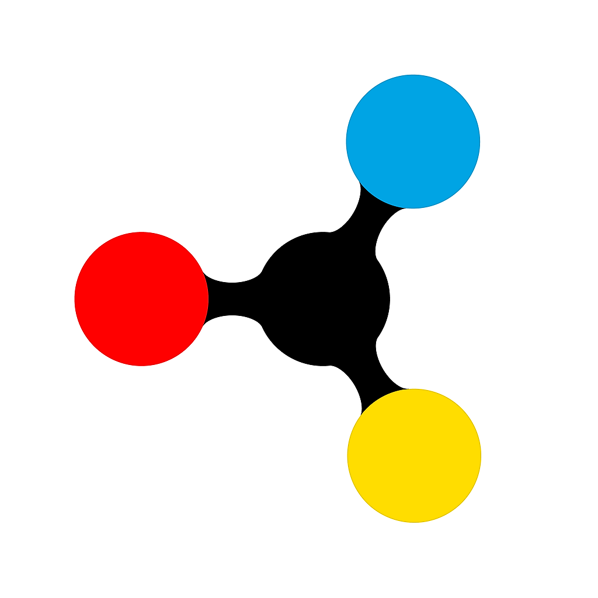

Norman A. Toro Vega
Projects
Resume
About + Connect
Spark! Innovation Fellowship:
My Science Guide 🚀

Case study is being written! Check back soon 😁
Watch our pitch!
© Norman A. Toro Vega | 2020
Spark! Innovation Fellowship: My Science Guide 🚀
Case study is being developed! Check back soon 😁